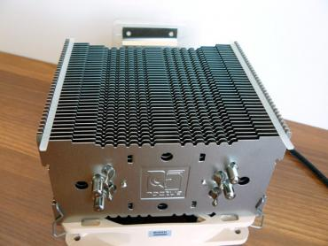
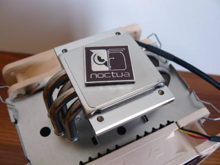
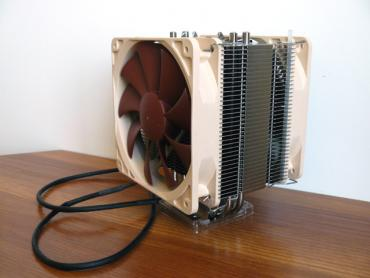
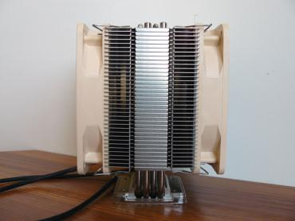
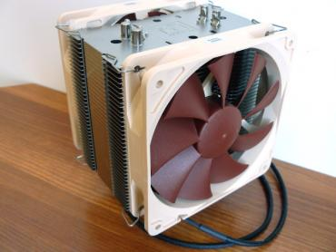
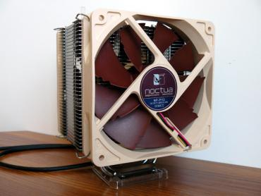
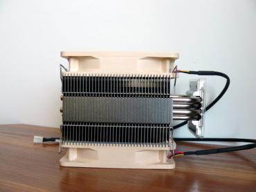
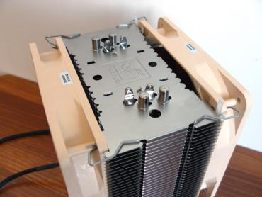
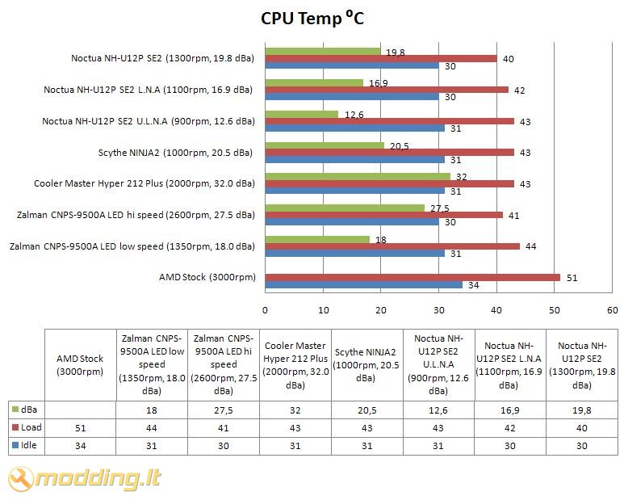

Noctua NH-U12P SE2
Noctua kompanija mums jau pažystama, neseniai apžvelgėme jų NH-C12P aušintuvą. Šį kartą apžvelgsime NH-U12P SE2 - tai atnaujinta pripažinimą pelniusio NH-U12P versija. Dabar aušintuvas komplektuojamas su dviem NF-P12 ventiliatoriais bei tvirtinimais LGA1366 ir LGA1156 platformoms.
Žvilgsnis iš arčiau
Noctua NH-U12P SE2 pakuotė beveik identiška NH-C12P aušintuvo pakuotei. Pakuotėje yra permatomi langeliai, pro kuriuos matome radiatorių bei NF-P12 aušintuvą. Ant aušintuvo pakuotės pateikiama daug infomracijos: piekinėje pakuotės dalyje nurodytos pagrindinės aušintuvo ypatybės, tokios kaip Core i5 & i7 ready. Šoninėse dalyse - montavimo schemos AMD bei Intel platformoms, aušintuvo geometriniai parametrai bei produkto aprašymas šešiomis užsienio kalbomis. Taipogi randame Noctua produktų apdovanojimų sąrašą, kuriuos suteikė tokie kompiuterinės technikos apžvalgų puslapiai kaip bit-tech ar 3dgameman. Viršutinėje dalyje nurodytos pagrindinės radiatoriaus bei ventiliatorių specifikacijos. Galinėje pakuotės dalyje randame NF-P12 9-Blade ventiliatoriaus Vortex-Control Notches technologijos aprašymą bei trumpus aušintuvo ypatumų , tokių kaip SecuFirm2™ multi-socket mounting system aprašymus.
Pakuotės viduje randame:
- radiatorių ir 2 vnt. NF-P12 ventiliatorių
- tvirtinimo detales AMD ir Intel platformoms
- termopastą NT-H1
- manual - vartotojo knygeles
- 4 vnt. jungimo adapterių: 2 vnt. Low Noise Adaptor (L.N.A) bei 2 vnt. Ultra Low Noise Adaptor (U.L.N.A)
- 1 vnt. adapteris dviems ventiliatoriams pajungti į vieną CPU Fan kištuką
- atsuktuvą
- varžtus
- ventiliatorių tvirtinimo rėmelius
- Noctua logotipą-lipduką
- antivibracines juosteles ventiliatoriams
Ventiliatorių specifikacijos
- Modelis: 2 vnt. NF-P12
- Dydis: 120x120x25mm
- Guolis: SSO-Bearing
- Ventiliatoriaus apsisukimai: 1300rpm (+/- 10%)
- Oro srautas: 92.3 m³/h
- Triukšmo lygis: 19.8 dBA
- Oro spaudimas: 1.68 mm H2O
- Ventiliatoriaus apsisukimai naudojant U.L.N.A: 900rpm (+/- 10%)
- Oro srautas: 63.4 m³/h
- Triukšmo lygis: 12.6 dBA
- Oro spaudimas: 1.21 mm H2O
- Ventiliatoriaus apsisukimai naudojant L.N.A: 1100rpm (+/- 10%)
- Oro srautas: 78.5 m³/h
- Triukšmo lygis: 16.9 dBA
- Oro spaudimas: 1.43 mm H2O
- Įtampa: 12V
- Galia: 1.08W
- Ilgaamžiškumas: 150,000 val
- Jungtis: 3pin
Aušintuvo specifikacijos
- Suderinamumas: socket LGA 775, LGA1366, LGA1156, AM2, AM2+, AM3
- Radiatoriaus išmatavimai: 71(ilgis) x 126(plotis) x 158(aukštis) mm
- Medžiagos: varis/aliuminis
- Svoris: 600g (su ventiliatoriais 940g)
Noctua NF-P12 ventiliatorius pagamintas naudojant ypatingą Vortex-Control Notches technologiją. Naudojant Vortex-Control Notches technologiją, galinės briaunos sūkuriai yra suskaidomi į keletą mažesnių sūkurių. Taigi triukšmas yra paskirstomas didesniame dažnių diapazone, todėl yra gerokai mažiau girdimas. Dėl oro srauto nutekėjimo per išpjovas, esančias ant ventiliatoriaus menčių, srautas susimaišo lygiau, tai sumažina turbulenciją, sumažina greičio praradimą ir triukšmo skleidimą. Šis ventiliatorius veikia išties labai tyliai - Ultra Low Noise rėžime jis beveik begarsis.
Noctua NH-U12P SE2 aušintuvo radiatorius pagamintas iš 4 šiluminių heatpipe vamzdelių, kurie yra padengti nikeliu ir išlenkti U forma. Radiatoriui pagaminti naudotas varis bei aliuminis. Apačioje sumontuota plokštelė šilumą nuo procesoriaus perduoda į 4 U forma išdėstytus šiluminius heatpipe vamzdelius. Jie šilumą perduoda į 36 plokštelių masyvą. Kadangi 4 šiluminiai heatpipe vamzdeliai išlenkti U forma, tai kiekviename šone gauname po 4 lygegrečiai išdėstytus vamzdelius. Iš viso pro plokšteles eina 8 vamzdeliai.
Viršutinėje aušintuvo dalyje matome Noctua įspaustą logotipą. Radiatoriaus šonuose yra grioveliai rėmeliams, kurie skirti ventiliatorių tvirtinimui. Radiatoriaus paviršius, kuriuo jis montuojamas prie procesoriaus, nėra nupoliruotas iki veidrodinio spindesio. Jis tarsi su nedideliais, viena kryptimi orentuotais, grioveliais. Taipogi negalima nepastebėti plokštelių vidinių kraštų dantytumo.
Prieš uždedant ventiliatorių ant radiatoriaus, nepamirškite priklijuoti guminių tarpinių - jos skirtos triukšmo ir vibracijų mažinimui.
       
Tvirtinimas
Aušintuvą Noctua NH-U12P SE2 montavau AM2+ socket'ui. Montuojant šį aušintuvą, nuimti back plate plokštelę nebūtina. Ji naudojama aušintuvo tvirtinimui su kitomis komplekte esančiomis detalėmis. Kuomet keisite tvirtinimus, neskubėkite atsukinėti visų varžtų, nes tuomet plokštelė nukris ir teks išiminėti motininę plokštę iš korpuso. Paguldžius korpusą horizontaliai bei atsargiai nuimant seną tvirtinimą, galime apsieiti ir be motininės plokštės išėmimo iš korpuso.
Nuimame senąjį aušintuvą, nuvalome senąją termopastą nuo procesoriaus. Tuomet atsukame 4 varžtus, kurie laiko galinę tvirtinimo plokštelę - back plate. Sumontuojame reikiamas detales iš Noctua aušintuvo tvirtinimo rinkinio: ant išorinės motininė plokštės pusės dedamos baltos tarpinės, ant viršaus dedami metaliniai tvirtinimo elementai. Užtepama termopasta, uždedamas aušintuvas bei prisukami varžtai.
Aušintuvas sumontuotas. Pajungiame ventiliatorių laidus į adapterį, skirtą dviems ventiliatoriams pajungti į vieną CPU Fan kištuką. Pajungti galime naudodami U.L.N.A (mėlynas adapteris), L.N.A (juodas adapteris) arba be jų, priklausomai nuo to, kas svarbiau - ar geresnis aušinimas, ar mažesnis triukšmo lygis.
Rezultatai
Testavimo sistema:
- CPU Cooler - Noctua NH-U12P SE2
- Case - Antec Mini P180
- Mainboard - Asus M2N68-AMSE2
- CPU - AMD ATHLON 64 X2 Dual-Core 5000+ AM2 (65W)
- RAM - Corsair DDR2 KIT 2X1G 800MHZ TWIN2X2048-6400 G
- HDD - SEA BARRACUDA 160GB 7200rpm
- PSU - Cooler Master Silent Pro M700
- Case Fans - Noctua NF-S12B FLX 120mm (1200rpm, 100.6 m³/h, 1.31 mm H2O), Antec 200mm TriCool (400rpm, 39 CFM)
Procesoriaus (CPU) temperatūra testuojama Idle ir Load rėžimais. Load rėžimui naudojama Orthos programa. Temperatūros rodmenys stebėti SpeedFan 4.39 bei PC Probe II V1.04.74 programomis. Testuojant buvo išmėginti U.L.N.A, L.N.A bei paprastas pajungimo rėžimas. Testavimams naudotas Antec Mini P180 korpusas galinėje sienelėje turi Noctua NF-S12B FLX 120mm orą ištraukiantį aušintuvą (1200rpm, 100.6 m³/h, 1.31 mm H2O), o taip pat viršuje esantį, orą ištraukiantį, Antec 200mm TriCool ventiliatorių (400rpm, 39 CFM).

Noctua NH-U12P SE2 aušintuvo rezultatai geriausi iš testuotų aušintuvų tarpo. Veikdamas 1300rpm greičiu ir skleisdamas 19.8 dBa NH-U12P SE2 aušintuvas rodo žemiausią CPU temperatūrą 40 ⁰C Load rėžime. Naudojant U.L.N.A adapterį, temperatūra vos 3 laipsniais aukštesnė, tačiau aušintuvai veikia 900rpm greičiu ir skleidžia tik 12.6 dBa triukšmo lygį - tai išties įspūdingas rodiklis.
Išvados
Pliusai:
- efektyvus aušinimas
- 2 vnt. NF-P12
- kokybiškai surinktas
- yra apsukas mažinantys adapteriai U.L.N.A ir L.N.A
- tik 12.6 dBA naudojant U.L.N.A !
- komplekte pridedamas atsuktuvas
- aiškus manual
- 6 metų garantija
Minusai:
- nėra apsukų reguliatoriaus
 Noctua NH-U12P SE2 aušintuvo testo rezultatai tikrai puikūs - lyginant su AMD Stock aušintuvu, temperatūra nukrito net 11 ⁰C Load rėžime. Aušintuvo komplekte yra du NF-P12 ypač tylūs ventiliatoriai, U.L.N.A ir L.N.A adapteriai, NT-H1 termopasta bei montavimui reikalingas atsuktuvas. Visi šie priedai ir gerosios šio aušintuvo savybės leidžia jį pavadinti vienu geriausių aušintuvų, esančių rinkoje. Kaip žinome - geri daiktai nebūna pigūs. Šio Noctua NH-U12P SE2 aušintuvo rekomenduojama pardavimo kaina EUR 56.90 / USD 64.90.
Noctua NH-U12P SE2 aušintuvo testo rezultatai tikrai puikūs - lyginant su AMD Stock aušintuvu, temperatūra nukrito net 11 ⁰C Load rėžime. Aušintuvo komplekte yra du NF-P12 ypač tylūs ventiliatoriai, U.L.N.A ir L.N.A adapteriai, NT-H1 termopasta bei montavimui reikalingas atsuktuvas. Visi šie priedai ir gerosios šio aušintuvo savybės leidžia jį pavadinti vienu geriausių aušintuvų, esančių rinkoje. Kaip žinome - geri daiktai nebūna pigūs. Šio Noctua NH-U12P SE2 aušintuvo rekomenduojama pardavimo kaina EUR 56.90 / USD 64.90.
Modding.lt komanda dėkoja Jakob Dellinger iš www.noctua.at už apžvalgai suteiktą produktą.
Jei norėsite pakomentuoti mano straipsnį arba pareikšti savo nuomonę, apsilankykite Modding.lt forume.


{kind=link}
{kind=link}
{kind=link}
{kind=link}
{kind=link}
{kind=link}
{kind=link}
{kind=link}
{kind=link}
{kind=link}
{kind=link}
{kind=link}
{kind=link}
{kind=link}
{kind=link}
{kind=link}
{kind=link}
{kind=link}
{kind=link}
{kind=link}
{kind=link}
{kind=link}
{kind=link}
{kind=link}
{kind=link}
{kind=link}
{kind=link}
{kind=link}
{kind=link}
{kind=link}
{kind=link}
{kind=link}
{kind=link}